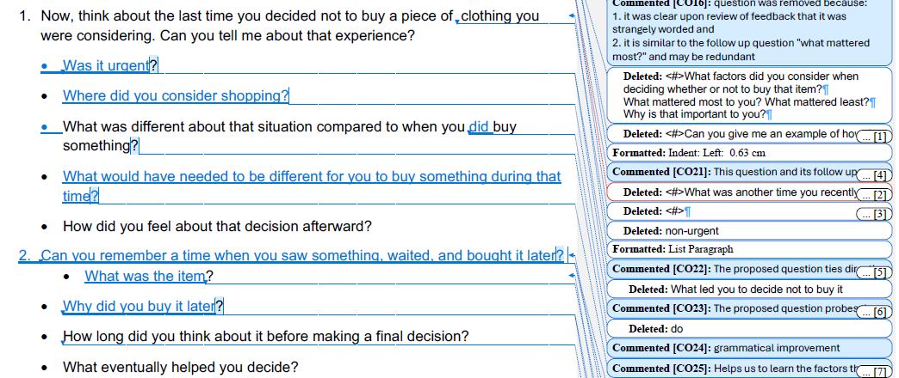
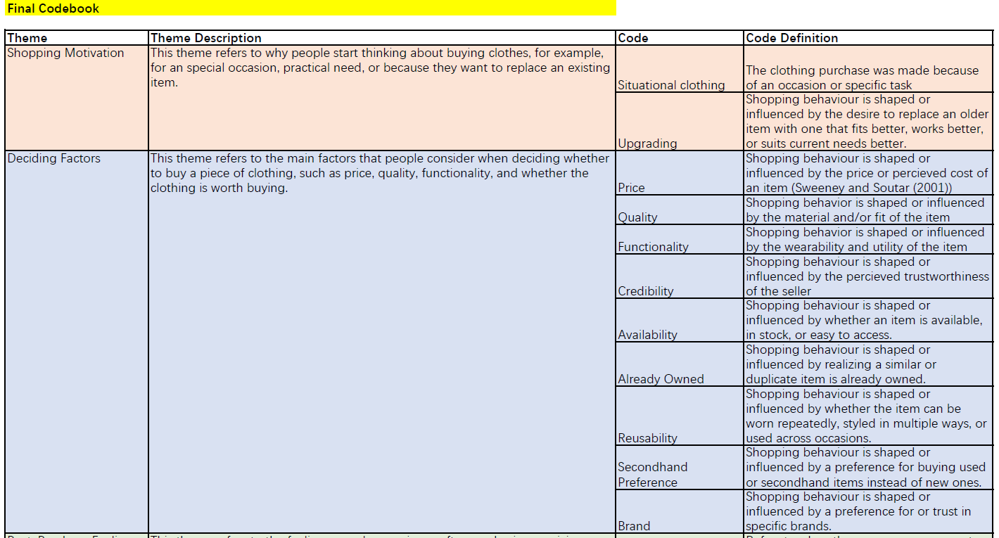
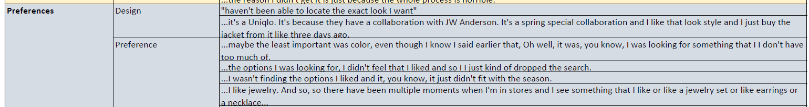

I was involved across the full study, not just the interviews. I helped write the original screener and interview guide, then helped revise both after feedback identified gaps — narrowing the participant profile to online-only shoppers, replacing abstract percentage questions with item counts, and rewriting several interview questions that were double-barreled or leading. I moderated 2 of the 8 sessions, helped build the shared codebook from all 8 transcripts, and applied it to my own two.
We started from a gap, not a hypothesis. Most consumer research explains need-driven buying — people buying because something broke or ran out. Online apparel doesn't fit that pattern: the market was worth $883.1 billion in 2025, yet 77.6% of e-commerce apparel carts get abandoned. Somewhere between browsing and buying, people are making a call with no external pressure forcing their hand, and that's the part existing research tends to skip. Picking that as our focus meant trading an easier, more measurable question for one that actually needed interviews, not a survey, to answer.
Our first screener and interview guide had real gaps, and none of them were obvious until we had to defend our own design choices. The participant profile split respondents into online and in-store shoppers, which would have left four interviews per group, too thin from eight total sessions to say anything meaningful. The recall window was six months, long enough to invite vague, reconstructed answers. Several screener questions asked people to estimate percentages of their own shopping behavior, a harder mental task than it sounds.
We narrowed the profile to online shoppers only, shortened recall to three months, and swapped percentage estimates for item counts. We also noticed our interview guide barely touched RQ3, hesitation and uncertainty, so we rewrote several questions and added explicit follow-ups like "What would have needed to be different for you to buy something during that time?"
The bigger lesson wasn't any single fix, it was realizing how much of a study's outcome gets locked in before a single interview happens. A vague screener question doesn't just produce a weird answer; it quietly narrows what you're able to find later.

Revising after feedback. Tracked changes on the original screener and interview guide.
Each session ran 20–30 minutes over Teams, opening with easy warm-up questions about daily clothing habits before working up to the harder ask: walking through a purchase made, one that wasn't, and one that got delayed. Sequencing mattered more than I expected going in. Ending on a regretted purchase felt like the natural stopping point on paper, but it left people on a low note. Closing with a favorite purchase instead, right after the regret question, kept the same content and ended the conversation somewhere warmer.
I moderated two of the eight sessions. One participant's story captured how easy it is to lose track of what you already own, she regretted a jacket bought on impulse, then discovered she already had three nearly identical ones in transit. The other leaned entirely on brands he already trusted, and only hesitated the one time he stepped outside that comfort zone chasing a hard-to-find hoodie that turned out to be sold out. Both sessions ran long, mostly because participants kept answering questions I hadn't asked yet, which meant deciding, mid-conversation, whether to skip ahead or keep probing.
Building the codebook took longer than actually applying it. We kept going back and forth on where codes like "Already Owned" and "Upgrading" ended, since participants often described both in the same sentence, wanting something new because an old item just felt outdated. Agreeing on clean definitions before touching the transcripts was the part that made the coding hold up later; tagging quotes first and sorting definitions out afterward would have meant redoing half the work once we noticed the overlap. I applied the finished codebook to my two transcripts, going line by line and grouping tagged snippets into patterns we could compare against the rest of the team's.

The shared codebook. Five themes, roughly 25 codes, agreed on before coding began.

From quote to code. Line-by-line tagging on my own two transcripts.
Finding a sale feels like luck. 5 of 8 participants treated sales as unpredictable windows, delaying purchases and rechecking prices until something dropped. Consistent with loss aversion (Kahneman & Tversky, 1979).
Upgrading what is already owned. 4 of 8 browsed for near-duplicates of things they already had, sometimes without realizing it until later. A small case of perceived obsolescence (Packard, 1960).
Quality and fit carry both the decision and the doubt. For 7 of 8, quality and fit were the top factor, and also a stand-in for the risk of buying something they couldn't touch first (Kang et al., 2013).
A wait-and-see strategy for uncertainty. All 8 participants delayed or revisited a purchase at some point; 5 tied it directly to doubt, testing whether the want would still be there later (Zeelenberg, 1999).
Rationalizing purchases to reduce internal conflict. Some participants justified purchases after the fact, citing savings, meaning, or someone else's influence. Motivated reasoning (Kunda, 1990) at work.
Online clothing platforms should make an item's real-world fit easier to verify before purchase. A practical opportunity here is showing how a piece looks on people of different sizes and heights, giving shoppers a reference point closer to trying something on, which could reduce the uncertainty that drives so much of the delaying and rationalizing we saw.
Moderating taught me more about listening than about asking. Participants routinely answered questions I hadn't gotten to yet, which meant I had to decide, mid-conversation, whether to move on or dig for something new. Sometimes that judgment call didn't pay off, I once pushed forward with a planned question only to get a near-identical answer to one already given, which taught me to check what's already been covered before reaching for the next scripted question.
The strongest moment came from following up rather than following the script: asking a participant to directly compare a purchase she regretted with one she didn't make. I stuck to neutral acknowledgements like "Mhm" and "Right" throughout, rather than evaluative language, and let people finish their thoughts before moving on, small habits that made a noticeable difference in how much participants opened up.